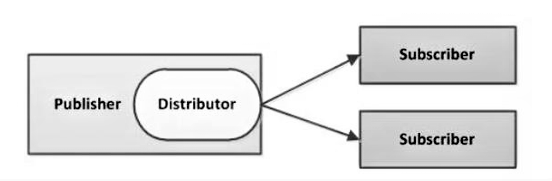
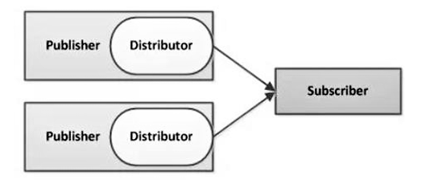
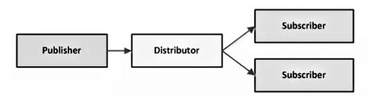
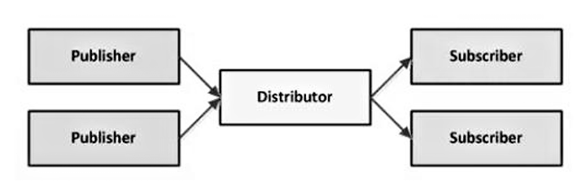
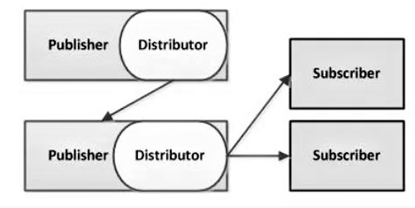
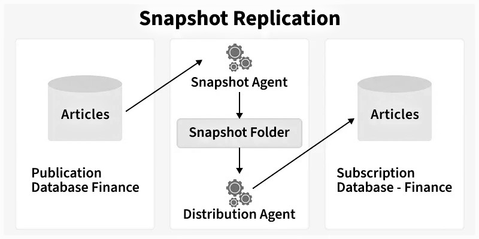
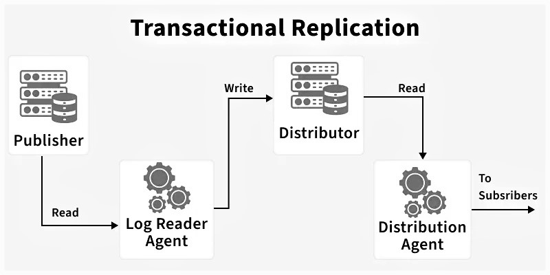
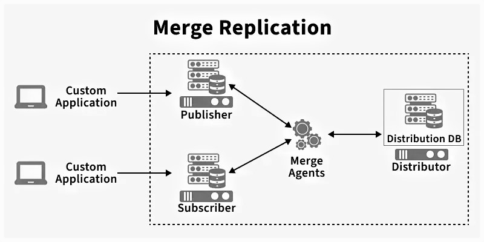

Replication چیست؟
رپلیکیشن یکی از قابلیتهای سطح بالای SQL Server است. در هسته خود، مسئله سادهای را حل میکند: وقتی تغییری از نوع DML یا DDL روی یک شیء در یک پایگاهداده اعمال میشود، آن تغییر باید روی سرور دیگری هم منعکس شود — غالباً در بازه چند ثانیه. این سازوکار بهعنوان همگامسازی تقریباً نزدیک به زمان واقعی توصیف میشود، نه یک سازوکار پشتیبانگیری و نه یک فناوری دسترسپذیری بالا.
-
رپلیکیشن در SQL Server دادهها و اشیای پایگاهداده را از یک پایگاهداده به دیگری کپی و توزیع میکند و آنها را همگام نگه میدارد.
-
تغییرات اعمالشده روی یک سرور (DML/DDL) را — غالباً در بازه چند ثانیه — روی سرورهای دیگر منعکس میکند.
-
کاربردها: گزارشگیری فقطخواندنی (Read Only)، توزیع داده میان کاربران راه دور، و کاهش بار روی سرور مرکزی.
اصطلاحات پایه Replication
پیش از پرداختن به انواع رپلیکیشن و جزئیات آن ابتدا با مفهوم چند واژه آشنا میشویم.
-
مقاله (Article): واحد پایه رپلیکیشن — یک جدول، نما، رویه ذخیرهشده، یا زیرمجموعهای فیلترشده.
-
نشریه (Publication): مجموعهای از مقالهها که بهعنوان یک گروه منطقی واحد منتشر میشوند.
-
ناشر (Publisher): نمونه پایگاهداده مبدأ که داده را برای رپلیکیشن در دسترس قرار میدهد.
-
توزیعکننده (Distributor): دادههای توزیع و تاریخچه را نگه میدارد؛ غالباً روی همان سرور ناشر قرار دارد.
-
مشترک (Subscriber): نمونه پایگاهداده مقصد که داده را دریافت میکند.
-
اشتراک (Subscription): درخواست مشترک برای یک نشریه — از نوع Push (توزیعکننده میفرستد) یا (Pull مشترک میگیرد.)
Agentهای Replication
برای انجام رپلیکیشن عواملی در پسزمینه فعالیت میکنند که ایجنت نامیده میشوند. این ایجنتها عبارتاند از:
-
ایجنت اسنپشات: فایلهای اسنپشات (شِما و داده) را میسازد و وضعیت همگامسازی را در پایگاه داده توزیع ثبت میکند.
-
ایجنت توزیع: اسنپشات و تراکنشهای تدریجی را به مشترکها منتقل میکند؛ هم برای Push و هم برای Pull اجرا میشود.
-
ایجنت خواننده لاگ: لاگ تراکنش ناشر را پیمایش میکند و تراکنشهای نشانهگذاریشده را به پایگاه داده توزیع منتقل میکند.
-
ایجنت ادغام: اسنپشات اولیه را اعمال و تغییرات تدریجی را در رپلیکیشن ادغامی جابهجا میکند.
-
ایجنت خواننده صف: بهروزرسانیهای صفشده در سمت مشترک را میخواند و در ناشر اعمال میکند.
فیلتر کردن دادهها
فیلتر کردن آرتیکل یکی از کاربردترین تصمیمهای طراحی در رپلیکیشن است. چهار دلیل اساسی برای این امر عبارتاند از: به حداقل رساندن حجم داده ارسالی روی شبکه، کاهش فضای ذخیرهسازی موردنیاز در مشترک، سفارشیسازی پاپلیکیشنها تا اپلیکیشنها یا سابسکرایبرهای مختلف فقط آنچه لازم دارند دریافت کنند، و کاهش یا پیشگیری از بروز conflictها وقتی مشترکین داده را بهروزرسانی میکنند، چون مشترکهای مختلف میتوانند پارتیشنهای متفاوتی از داده را دریافت کنند.
-
Static row filter: زیرمجموعه ثابتی از ردیفها را انتخاب میکند — «استتیک» است چون شرط فیلتر بهازای هر مشترک تغییر نمیکند. برای تمامی انواع رپلیکیشن از جمله اسنپشات، Transactional و مرج کاربرد دارد.
-
Column filter: زیرمجموعهای از ستونها را انتخاب میکند؛ آن هم با همه انواع رپلیکیشن کار میکند. وقتی مشترک نباید ستونهای حساس را ببیند، کاربردی است.
-
Parametrized row filtered: پارتیشنهایی پویا بر اساس پارامترهای مشترک میسازد؛ از نظر مفهومی شبیه فیلتر استتیک است اما در اجرا تفاوت دارد: اجازه میدهد چند پارتیشن منطقی از یک جدول داشته باشیم بدون آنکه چند نشریه بسازیم. فیلتر پارامتری فقط در رپلیکیشن مرج استفاده میشود.
-
Join filter: فیلتر کردن را به جدول مرتبط گسترش میدهد؛ معمولاً همراه رپلیکیشن مرج به کار میرود تا مشترک مثلاً فقط مشتریان خودش و سفارشهای همان مشتریان را دریافت کند. میتواند در کنار فیلترهای استتیک هم استفاده شود.
توپولوژیهای Replication
SQL Server پنج توپولوژی رپلیکیشن را پشتیبانی میکند:
-
ناشر مرکزی (Central Publisher): در این سناریو یک سرور همزمان نقش ناشر و توزیعکننده را دارد و سرورهای دیگر به عنوان سابسکرایبر در نظر گرفته میشوند؛ یکی از پرکاربردترین توپولوژیها است، مدیریتش ساده است و وقتی یک منبع مالک داده باشد مناسب است.
-
مشترک مرکزی (Central Subscriber): چند ناشر دادهشان را در یک مشترک مرکزی رپلیکیت میکنند؛ این حالت در انبار داده رایج است، جایی که سرور مرکزی داده چند سیستم مبدأ را یکجا جمع میکند.
-
ناشر مرکزی با توزیعکننده مجزا (Central Publisher with Remote Distributor): توزیعکننده روی سروری جدا از ناشر اجرا میشود؛ این کار پردازش توزیع را از ناشر برمیدارد اما ترافیک شبکه را در مجموع افزایش میدهد و وقتی منابع سرور یا شبکه ناشر محدود است مفید است.
-
توزیعکننده مرکزی (Central Distributor): یک توزیعکننده واحد به چند ناشر سرویس میدهد؛ ضعف حیاتی این توپولوژی وجود تنها یک نقطه شکست است — اگر توزیعکننده از کار بیفتد یا دچار اختلال شود، تمام عملیات رپلیکیشن همه ناشرها متوقف میشود؛ از همین رو این نوع توپولوژی چندان مورد استفاده قرار نمیگیرد.
-
Publishing Subscriber (مشتری ناشر): یک مشترک خودش نقش ناشر را برای مشترکهای دیگر هم ایفا میکند؛ این توپولوژی دارای نقش دوگانه است و وقتی مفید است که ناشر باید داده را از لینکهای پرهزینه یا ناپیوسته بفرستد — سایت مرکزی دادهها را به یک سایت منطقهای منتشر میکند و آن سایت منطقهای، بدون اینکه هر بار از مرکز داده بکشد، برای مشترکهای محلی بازنشر میکند.





انواع Replication
انتخاب نوع رپلیکیشن به محیط فیزیکی، حجم و ماهیت داده، و اینکه آیا مشترکها نیاز به بهروزرسانی داده دارند بستگی دارد. به طور پیشفرض هر سه نوع رپلیکیشن از یک اسنپشات برای مقداردهی اولیه به سابسکرایبرها استفاده میکنند؛ ایجنت اسنپشات موجود در SQL Server وظیفهی تولید فایلهای اسنپشات را به عهده دارد، اما ایجنت مربوط به ارائه و تحویل این فایلها به نوع رپلیکیشن انتخابشده متفاوت است: رپلیکیشنهای اسنپشات و ترنزاکشنال (تراکنشی) برای ارائه فایلها از distribution ایجنت استفاده میکنند، در حالی که مرج رپلیکیشن برای این منظور از مرج ایجنت بهره میبرد.
رپلیکیشن اسنپشات
داده را به صورت کپی لحظهای توزیع میکند و تغییرات تدریجی را پایش نمیکند؛ در هر همگامسازی یک اسنپشات تازه تولید و اعمال میشود — بلافاصله بعد از ایجاد یک سابسکرپیشن یا بر اساس یک برنامه در زمان انتشار. ایجنت اسنپشات فایلهای اسنپشات حاوی ساختار و دادههای جداول منتشرشده را آماده میکند و این فایلها را برای ناشر در اسنپشات فولدر ذخیره میکند.
موارد کاربرد مناسب: داده بهندرت تغییر میکند، فقط حجم کمی داده باید رپلیکیت شود، یا حجم زیادی از داده در بازه کوتاهی تغییر میکند — در این حالت اسنپشات کارآمدتر از تلاش برای ردیابی تکبهتک تغییرات است.
مثال: فهرست قیمت محصولات که بهندرت تغییر میکند؛ سربار پیوسته کمتری نسبت به رپلیکیشن تراکنشی دارد چون تغییرات تدریجی را دنبال نمیکند، اما تولید و اعمال یک اسنپشات بزرگ میتواند منابع قابلتوجهی مصرف کند.

رپلیکیشن تراکنشی – Transactional
با یک اسنپشات شروع میشود تا مشترک را مقداردهی اولیه کند، سپس تغییرات بعدی را پیوسته از لاگ تراکنش ناشر به پایگاه داده توزیع و از آنجا به مشترکها تحویل میدهد.
سابسکرایبرها تنها میتوانند از این دادهها به صورت Read Only استفاده کنند، چرا که تغییرات اعمالشده مجدداً به ناشر بازگردانده نمیشوند؛ اما گزینههایی برای اجازه دادن به بهروزرسانی مشترک وجود دارد (پایینتر).
کاربرد مناسب: تغییرات تدریجی باید پس از وقوع منتشر شوند، برنامهها به تأخیر کمی میان وقوع تغییر در ناشر و رسیدن آن به مشترک نیاز دارند، ناشر حجم بسیار بالایی از فعالیت درج، بهروزرسانی و حذف دارد، یا یک برنامه نیاز دارد در وضعیت داده مداخله کند — برای نمونه اگر یک سطر پنج بار تغییر کند، رپلیکیشن تراکنشی به برنامه اجازه میدهد هر تغییر را ببیند و روی آن عمل کند، نه فقط وضعیت نهایی را.
مثال بلیتفروشی: سیستم رزرو مرکزی در تهران تنها رزروهای مربوط به اهواز را به شعبه اهواز رپلیکیت میکند؛ شعبه میتواند آن رزروها را با تأخیر بسیار کم بخواند اما داده رزرو مرکزی را بهروزرسانی نمیکند — مشترک برای خواندن مستقل و ناشر برای نوشتن مرجع میماند.
ایجنتها: Snapshot Agent فایلهای اسنپشات حاوی ساختار و دادههای جداول منتشرشده و اشیای پایگاه داده را مهیا و در اسنپشات فولدر ذخیره میکند و نتیجه همگامسازی را در Distribution Database موجود روی Distributor ثبت میکند؛ Log Reader Agent تراکنشهای هر پایگاه داده پیکربندیشده را مانیتور و تراکنشهای مشخصشده برای رپلیکیشن را از transaction log به distribution database کپی میکند؛ Distribution Agent اسنپشات فایلهای اولیه از پوشه snapshot و تراکنشهای ذخیرهشده در جداول distribution database را برای سابسکرایبرها کپی میکند و تغییرات تدریجی مطابق برنامه زمانی آن در دسترس سابسکرایبرها قرار میگیرند.

گزینههای بهروزرسانی در سمت مشترک
بهروزرسانی فوری (Immediate Updating): اجازه میدهد دادههای رپلیکیتشده در مشترک بهروزرسانی شوند و تغییرات به ناشر و دیگر مشترکها بازگردانده شوند؛ شرط استفاده: ناشر و مشترک باید در دسترس باشند و ارتباط بین آنها برقرار باشد.
بهروزرسانی صفشده (Queued Updating): اجازه میدهد مشترک دادههای منتشرشده را بدون یک اتصال شبکه فعال به ناشر تغییر دهد؛ عملیات INSERT/UPDATE/DELETE در یک صف ذخیره میشوند و پس از برقراری مجدد ارتباط، به صورت غیرهمزمان از صف به ناشر اعمال میشوند. چون بهروزرسانی در بیش از یک گره و در زمانهای مختلف رخ میدهد، احتمال تعارض وجود دارد که با سیاست حل تعارض تنظیمشده در نشریه شناسایی و رفع میشود.
فیل اور بین دو حالت: این دو گزینه قابلیت سوئیچ روی یکدیگر را دارند — مثلاً اگر برای اشتراکی حالت Immediate Updating انتخاب کردهایم و به دلیل مشکل شبکه ارتباط قطع شود، میتوان به صورت خودکار به Queued Updating سوئیچ کرد. این سوئیچ از طریق SSMS به صورت مستقیم انجام نمیشود؛ برای این کار باید تنظیمات update mode را در برنامه اعمال کرد یا رویه sp_setreplfailovermode را فراخوانی کرد تا حالت فیل اور برای مشترکها تنظیم شود.
رپلیکیشن مرج (ادغامی)
هم با یک اسنپشات شروع میشود، اما پس از آن تغییرات را هم در ناشر و هم در مشترک با استفاده از تریگرها و جداول متادیتا ردیابی میکند؛ وقتی مشترک وصل میشود تمام ردیفهایی را که از آخرین همگامسازی تغییر کردهاند با ناشر مبادله میکند و چون بهروزرسانی میتواند در بیش از یک گره رخ دهد، تعارض ممکن است اما رپلیکیشن مرج سازوکارهایی برای تشخیص و رفع آنها بر اساس قواعد پیکربندیشده فراهم میکند.
کاربرد مناسب: چند مشترک ممکن است داده یکسان را در زمانهای مختلف بهروزرسانی و بازمنتشر کنند، مشترکها باید به صورت آفلاین کار کنند و بعداً همگامسازی کنند، هر مشترک به پارتیشن متفاوتی از داده نیاز دارد، یا تعارض ممکن است و باید تشخیص و رفع شود.
سه تغییر ساختاری در ناشر: (۱) افزودن ستون rowguid به هر جدول برای شناسایی یکتای هر ردیف و ردیابی تغییرات — مگر اینکه جدول از قبل ستونی با نوع داده uniqueidentifier و ویژگی ROWGUIDCOL داشته باشد که در آن صورت از همان ستون استفاده میشود؛ (۲) افزودن چندین جدول سیستمی، از جمله msmerge_contents (تغییرات محتوایی هر ردیف و ستون) و msmerge_tombstone (ردیابی حذفها)؛ (۳) ایجاد تریگر روی جداول منتشرشده که تغییرات هر ستون و ردیف را در این جداول سیستمی ثبت میکند — این تریگرها هنگام اجرای اولیه Snapshot Agent برای یک نشریه ساخته میشوند و در سمت مشترک نیز هنگام اعمال اسنپشات، تریگرهای متناظر ساخته میشوند.
چگونگی کارکرد: اگر نشریه فیلتر نشده باشد یا از فیلترهای استتیک استفاده کند، Snapshot Agent تنها یک اسنپشات ایجاد میکند و اگر از فیلترهای پارامتری استفاده کند، از هر پارتیشن داده یک اسنپشات تهیه میکند. Merge Agent اسنپشاتهای اولیه تهیهشده را به مشترکین اعمال میکند، تغییرات تدریجی سمت ناشر یا سابسکرایبر پس از اسنپشات اولیه را ادغام میکند، و بر اساس قوانین پیکربندیشده به تشخیص و حل تعارضها میپردازد.

کارایی و پایش
رپلیکیشن از طریق SQL Server Management Studio مدیریت میشود: پیکربندی توزیعکننده، ساخت نشریه، ساخت اشتراکها، و در نهایت پایش از طریق Replication Monitor. چهار مفهوم در این بخش بررسی میشود:
SubscriptionStreams (اعمال موازی)
به طور پیشفرض، ایجنت توزیع تغییرات را با یک اتصال واحد روی مشترک اعمال میکند؛ SubscriptionStreams به آن اجازه میدهد چند اتصال داشته باشد و دستههایی از تغییرات را موازی اعمال کند — این کار میتواند توان عملیاتی تجمعی رپلیکیشن را به طور چشمگیری بالا ببرد و در همان حال بسیاری از ویژگیهای تراکنشی اعمال تکاتصالی را حفظ کند.
این پارامتر عمدتاً تأخیر توزیعکننده به مشترک را هدف میگیرد؛ پیش از فعالکردنش باید مطمئن شویم گلوگاه واقعاً همانجاست — با استفاده از توکنهای ردیاب یا شمارنده عملکرد SQLServer:Replication Dist. > Dist:Delivery Latency. اگر مشکل بلاکشدگی در سمت مشترک یا کندی دیسک باشد، افزایش اتصالهای موازی میتواند وضع را بدتر کند.
مقدار شروع پیشنهادی معمولاً برابر با تعداد پردازندههای فیزیکی روی مشترک است، با ۶۴ بهعنوان سقف عملی.
توکنهای ردیاب (Tracer Tokens)
Replication Monitor زبانه Tracer Tokens را برای رپلیکیشن تراکنشی دارد؛ توکن ردیاب مقدار کوچکی داده است که در لاگ تراکنش ناشر نوشته و به عنوان یک تراکنش رپلیکیشنشده معمولی علامتگذاری میشود. سیستم سپس ثبت میکند چه زمانی توکن به توزیعکننده رسیده و چه زمانی روی مشترک اعمال شده است.
سه اندازهگیری تولید میشود: ناشر به توزیعکننده (زمان میان کامیت تراکنش در ناشر و درج فرمان در پایگاه داده توزیع)، توزیعکننده به مشترک (زمان میان ورود فرمان به پایگاه داده توزیع و کامیت تراکنش در مشترک)، و تأخیر کل (زمان سرتاسری از کامیت در ناشر تا کامیت در مشترک).
مقدار Pending یعنی توکن هنوز به آن مرحله نرسیده؛ اگر Pending بماند، احتمالاً ایجنت مربوطه — خواننده لاگ یا توزیع — در حال اجرا نیست. توکنهای ردیاب به شما اجازه میدهند به این پرسش کاربردی پاسخ دهید که تأخیر کجاست، نه فقط اینکه تأخیری هست.
ایجنتهای پیوسته در برابر زمانبندیشده
ایجنتهای رپلیکیشن میتوانند پیوسته، زمانبندیشده یا بر حسب تقاضا اجرا شوند؛ اجرای پیوسته تأخیر را کم میکند اما میتواند خطاها را پنهان کند چون ایجنت تاریخچه تمیزی برای هر اجرا تولید نمیکند، و اجرای زمانبندیشده سربار شروع و توقف مکرر ایجنتها را کاهش میدهد به قیمت تأخیر بیشتر.
Replication Monitor
نقطه کنترل عملیاتی است: وضعیت نشریهها و اشتراکها، کارایی ایجنت توزیع، تأخیر، و زمان آخرین همگامسازی را نشان میدهد.